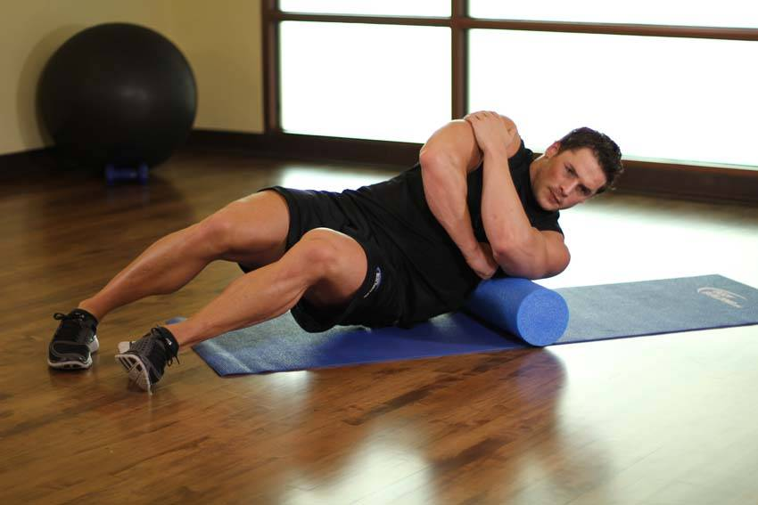

- While lying on the floor, place a foam roll under your back and to one side, just behind your arm pit. This will be your starting position.
- Keep the arm of the side being stretched behind and to the side of you as you shift your weight onto your lats, keeping your upper body off of the ground. Hold for 10-30 seconds, and switch sides.